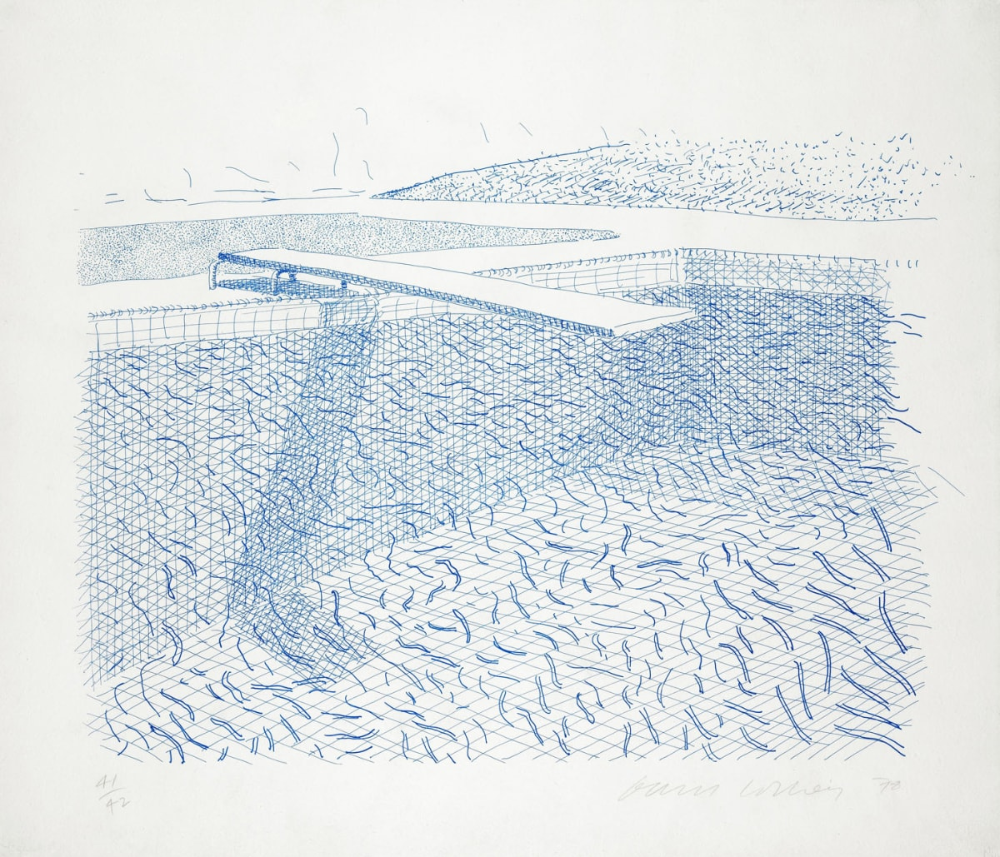
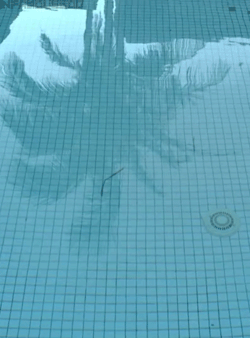

But at 77, Hockney is still working ludicrously hard, with two new shows in London this summer. He’s also every bit as dapper as the peroxide hipster who emerged in the early 1960s – red tie, white shirt, baggy grey slacks, green cardigan and matching green lighter. In the 60s, Hockney seemed to swing with the best of them – Andy Warhol, Ossie Clark, Tony Richardson, much of Hollywood (Billy Wilder, George Cukor, John Schlesinger). But half a century on, his perspective has changed.
| Title | Place |
| David Hockney: The Arrival of Spring, Normandy, 2020 | Royal Academy of Arts London |
| Hockney – Van Gogh: The Joy of Nature | The Museum of Fine Arts, Houston Texas |
|  | swimming pool |